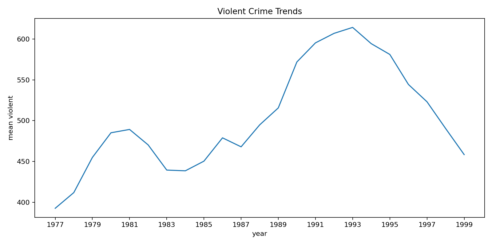

How does the unweighted mean state violent-crime rate change by year?
The first recorded mean is 392.825; the last is 458.490. The recorded period, rather than today, defines this comparison.

| segment | rows_used | metric | minimum | maximum |
|---|---|---|---|---|
| 1977 | 51 | 392.825490 | 67.1 | 1426.5 |
| 1978 | 51 | 412.021569 | 67.0 | 1411.7 |
| 1979 | 51 | 455.041176 | 61.3 | 1608.7 |
| 1980 | 51 | 485.219608 | 54.0 | 2010.6 |
| 1981 | 51 | 489.282353 | 67.5 | 2274.8 |
| 1982 | 51 | 470.364706 | 61.8 | 2123.1 |
| 1983 | 51 | 439.580392 | 53.7 | 1915.4 |
| 1984 | 51 | 438.660784 | 53.6 | 1721.5 |
| 1985 | 51 | 450.484314 | 47.0 | 1624.8 |
| 1986 | 51 | 479.011765 | 51.3 | 1505.3 |
| 1987 | 51 | 468.015686 | 56.8 | 1610.3 |
| 1988 | 51 | 494.886275 | 59.1 | 1921.6 |
| 1989 | 51 | 515.615686 | 63.2 | 2141.9 |
| 1990 | 51 | 571.813725 | 73.9 | 2458.2 |
| 1991 | 51 | 595.203922 | 65.4 | 2453.3 |
| 1992 | 51 | 606.833333 | 83.3 | 2832.8 |
| 1993 | 51 | 614.109804 | 82.2 | 2921.8 |
| 1994 | 51 | 594.243137 | 81.8 | 2662.6 |
| 1995 | 51 | 581.035294 | 86.7 | 2661.4 |
| 1996 | 51 | 544.352941 | 84.0 | 2469.8 |
| 1997 | 51 | 523.125490 | 87.2 | 2024.2 |
| 1998 | 51 | 490.500000 | 89.3 | 1718.5 |
| 1999 | 51 | 458.490196 | 66.9 | 1627.7 |
Equal-state averages are not national population-weighted rates; no gun-law causal effect is estimated.
Use matching population weights and policy identification before evaluating laws.